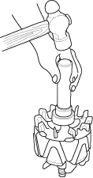
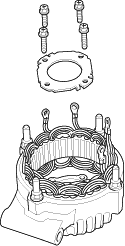
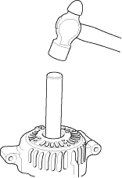
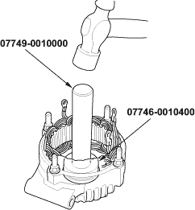

- With a hammer and commercially available tools shown, install a new rear bearing on the rotor shaft.

- Remove the front bearing retainer plate.

- Support the stator housing in a vice, and drive out the front bearing with a brass drift and hammer.

- With a hammer and the special tools, install a new front bearing in the stator housing.
